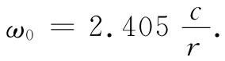
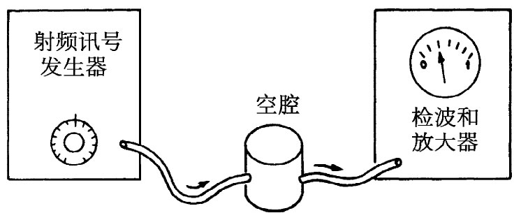
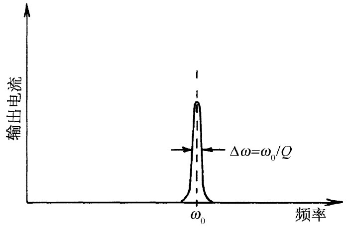

现在我们要来看看，当继续把频率增加得越来越高时，对于在电容器两板间的电场给出怎样的解。对于大的ω，该参数x=ωr/c也变得大了，因而在x的级数J0 中的头几项便将增加得很快。这意味着，我们曾在图23-5中画出来的那条抛物线在较高频率处会更加急剧地下降。事实上，看来好像在某个高频处场会完全降低至零，也许当c/ω近似等于a的一半时。让我们来看看，J0 是否确实会通过零而变成为负的。尝试由x=2开始：
函数仍未等于零。因此，就让我们尝试一个更大的x值，比如说x=2.5。代入数字之后，可得
J0 （2.5）=1-1.56+0.61-0.11=-0.06.
函数J0 在达到x=2.5时就已经通过了零点。对x=2和x=2.5的结果进行比较，看来似乎J0 在从2.5至2的五分之一路程处通过零点。我们应该猜测零发生在x大约等于2.4的地方。现在看看对于这个x值会给出的结果：
J0 （2.4）=1-1.44+0.52-0.08=0.00.
在精确到小数点后两位时得到零。若再计算得精确些（或者由于J0 是一个著名函数，所以只要查一查书本），我们会发现它在x=2.405处通过零，我们用手就已经把它算出，这表明你们本来也可以发现这些东西的，而不一定要从书本上查出来。
图23-6 贝塞尔函数J0 （x）
只要在书中查阅到了J0 ，则注意它在x值较大时如何表现，是十分有趣的。它看来像图23-6中的那条曲线，当x增大时，J0 （x）在正值与负值之间振动，振幅逐渐减小。
我们已经得到下面的有趣结果：若频率足够高，则在电容器中心处电场将指向一个方向，而在靠近边缘处电场又指向相反方向。例如，假设取一个足够高的ω使得在该电容器的外缘处x=ωr/c的值为4，那么该电容器的边缘就相当于图23-6中横坐标x=4的地方。这意味着我们的电容器是在ω=4c/a时工作的。在极板的边缘处，电场将有相当大的值而方向与我们所期待的相反。这就是在高频时电容器所能发生的令人感到惊异的事情。若把频率增得很高，则当从电容器中心向外移动时电场的方向会来回振动多次，而且还存在与这些电场联系着的磁场。因此，对于高频来说，我们的电容器看来并不像一个理想电容，就不足为怪了。甚至有可能开始怀疑：它看来更像一个电容还是更像一个电感呢？应该强调，还有一些发生于该电容器边缘上的更加复杂的效应已经被我们忽略了。例如，会有经过边缘向外的波辐射，因而场甚至比我们已算出来的还要复杂。但眼前我们不会对那些效应操心。
本来我们也可尝试做出一个有关电容器的等效电路，但或许更好的是直接承认，曾为低频而设计的那种电容器当频率太高时就不再令人满意了。若要来处理像这样的对象在高频时的运行情况，我们就必须放弃在处理电路时曾经做过的那种关于麦克斯韦方程组的近似方法，而返回到能够完全描述空间中场的完整的方程组。不要去同一些理想的电路元件打交道，而是必须处理那些实际存在的真实导体，把在导体之间空间里的一切场都算进去。例如，若想要有一个高频共振电路，则不会试着用线圈与平行板电容器去设计它。
图23-7 在一个封闭的圆筒盒内的电场和磁场
我们已经提到，刚才正在分析的那个平行板电容器具有电容和电感两方面的某些特征。既然有电场，就会在两板的表面上聚积电荷；既然有磁场，就会产生反电动势。是否有可能我们已有了一个共振电路呢？确实得到了。假设挑选这样一个频率，它能使该电场图样在盘的边缘以内的某个半径上降低至零，也就是说，我们选取一个比2.405大些的ωa/c。在这个与两板共轴的圆周上，电场处处都将是零。现在假定取一块薄金属片，并把它剪成其宽度恰好足以安装在该电容器的两板之间，然后把它在电场等于零的那个半径上弯成一个圆筒。由于那里没有电场，所以当我们放进这个导体圆柱时，就不会有电流流过它，而且，在电场和磁场方面也将不会有什么变化。在该电容器中间，我们已经能够放置一个直接短路器件而不致引起任何变化。而且，看看现在我们有的东西吧，已经有一个闭合柱形盒，其中存在电场和磁场，但完全不和外界联系。即使丢掉那些伸到盒外的两板边缘部分以及对电容器的接线，盒里的场仍不会变化。我们留下来的一切就是一个其中藏有电场和磁场的封闭盒子，如图23-7（a）所示。电场以频率ω来回振动着——不要忘记，ω确定了盒子的直径。振动E场的振幅随着从盒轴向外伸出的距离而变化，如图23-7（b）的曲线所示。这一曲线不过是零级贝塞尔函数的第一个极大。此外，还有一个磁场环绕着轴转，并以在时间上与电场相差90°的相位振动。
我们也可对磁场写出一个级数，并把它描绘出来，如图23-7（c）中的曲线所示。
我们怎样才能把电场和磁场贮藏在一个盒子里而与外界没有任何联系？这是因为，电场和磁场会维持它们本身：正在改变的E产生一个B，而正在改变的B又产生一个E——所有过程都按照麦克斯韦方程组进行。磁场具有电感的性质，而电场则具有电容的性质，两者合在一起才构成像共振电路那样的某种东西。注意刚才所描述的这些情况仅仅当盒子的半径恰好等于2.405c/ω时才发生。对于半径已经给定的盒子，这些振动着的电场和磁场只有在那些特定频率才会——按照我们所描述的那种方式——维持它们本身。因此，一个半径为r的柱形盒子在如下的频率处就会发生共振：
 （23.18）
我们曾说，在盒子完全封闭之后场仍将继续照样振动。那并非完全正确。假如盒子的壁是理想导体，那就会有可能。然而，对于一个实际盒子，存在于内壁上的振动电流会由于材料中的电阻而损耗能量。因而场的振动将逐渐衰减下去。从图23-7可以看到，与该空腔内部的电场和磁场相伴随必然存在一些强电流。因为垂直方向的电场会突然在盒子的顶板和底板上停顿下来，所以它在那里就有巨大散度，因而也就一定有正、负电荷出现在该盒子的内表面，如图23-7（a）所示。当电场倒转时，电荷也会倒转过来，因而在盒子的顶板和底板之间就一定形成交变电流。这些电荷将在盒子的侧壁内流动，如图所示。通过对磁场所发生的情况的考虑，我们也能够明白，必然会有电流通过该盒子的侧壁。图23-7（c）中的曲线告诉我们，磁场在该盒子的边缘处会突然下降至零。像这样的磁场突变只有当壁中存在电流时才能发生，这一电流就是向该盒子的顶板和底板提供那些交变电荷的。
你可能对于在盒子的垂直方向的侧壁中发现有电流会感到奇怪。关于以前讲到在电场为零的地方引进这些侧壁不会改变任何东西，又是怎么回事呢？然而，要记住，当我们起初放进该盒子的侧壁时，顶板和底板还伸出于壁之外，因而在盒子外面也就还有磁场。只有当我们丢掉了伸出于盒子边缘之外的那一部分电容器极板之后，净电流才不得不出现在该垂直壁的内表面上。
虽然在完全封闭的盒子内的电场和磁场将会由于能量损失而逐渐减弱，但我们还是能够阻止这一事情发生，只要在盒子旁边挖开一个小洞而输入一点点电能以补充其损失。试取一根小导线，插进盒子旁边的这一小洞中，并把它粘牢在内壁上以便形成一个小回路，如图23-8所示。如果现在把这一段导线接至一高频交变电源，则电流将会把能量耦进空腔里，而使其中的电场和磁场振动能够持续进行。当然，这只有当驱动源的频率与盒子的共振频率相同时才会发生。如果源的频率不对头，则电场和磁场将不会发生共振，因而盒子里的场就会变得非常微弱。
图23-8 对一共振腔的耦进和耦出办法
通过在盒子旁边再开另一个小洞并钩住另一个耦合回路，如在图23-8中描画出来的那样，则这共振行为便容易观察到。穿过这耦合回路的变化磁场将在回路中产生一感生电动势。若这个回路现在被连接至某个外面的测量电路，则电流将正比于空腔中场的强度。假定现在将空腔的输入回路接至一部射频信号发生器，如图23-9所示。这信号发生器含有一个交变电流源，其频率可由旋转发生器面板上的旋钮而改变。然后又把空腔的输出回路接至一个“检波器”上，它是一部能测量来自输出回路电流的仪器。它会给出正比于电流的指针读数。如果现在测量作为该信号发生器频率函数的输出电流，则可找到一条像图23-10所示的曲线。除十分靠近空腔共振频率ω0 的那些频率以外，对于其他所有频率，输出电流都很小。这条共振曲线很像我们曾在第1卷第23章中所描述过的那些曲线。然而，这一共振曲线的宽度比起通常由电感和电容所构成的共振电路中所求得的要狭窄得多；也就是说，空腔的Q值很高。要得到一个高达10万或更大的Q值并不希奇，只要空腔的内壁是由某些像银那样十分优良的导电材料所构成的。
|  |  |
| 图23-9 为观测空腔共振用的装备 | 图23-10 共振空腔的频率响应曲线 |